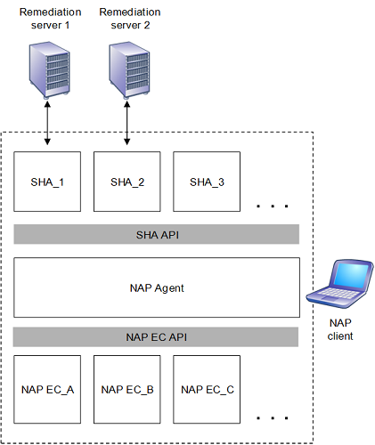

[!Note]
The Network Access Protection platform is not available starting with Windows 10
Â
A NAP client is a computer running Windows XP with Service Pack 3 (SP3), Windows Vista, or Windows Server 2008 that includes the NAP platform.
This figure shows the architecture of the NAP platform on a NAP client.

The NAP client architecture consists of the following:
A layer of Enforcement Client (EC) components
Each NAP EC is defined for a different type of network access. For example, there is a NAP EC for DHCP configuration and a NAP EC for remote access VPN connections. The NAP EC can be matched to a specific type of NAP enforcement point. For example, the DHCP NAP EC is designed to work with a DHCP-based NAP enforcement point. Some NAP ECs are provided with the NAP platform and third-party software vendors or Microsoft can provide others.
A layer of System Health Agent (SHA) components
An SHA component maintains and reports one or multiple elements of system health. For example, there might be an SHA for antivirus signatures and an SHA for operating system updates. An SHA can be matched to a remediation server, which is a computer that contains health update resources that NAP clients can access to remediate their noncompliant state. For example, an SHA for checking antivirus signatures is matched to the server that contains the latest antivirus signature file. SHAs do not have to have a corresponding remediation server. For example, an SHA can just check local system settings to ensure that a host-based firewall is enabled. Windows Vista and Windows XP Service Pack 3 include the Windows Security Health Agent (WSHA) that monitors the settings of the Windows Security app. Third-party software vendors or Microsoft can provide additional SHAs to the NAP platform.
NAP Agent
Maintains the current health state information of the NAP client and facilitates communication between the NAP EC and SHA layers. The NAP Agent is provided with the NAP platform.
System Health Agent API
Provides a set of functions that allow SHAs to register with the NAP Agent, to indicate system health status, respond to queries for system health status from the NAP Agent, and for the NAP Agent to pass system health remediation information to an SHA. The SHA API allows vendors to create and install additional SHAs. The SHA API is provided with the NAP platform. See the following NAP interfaces: INapSystemHealthAgentBinding2, INapSystemHealthAgentCallback, and INapSystemHealthAgentRequest.
To indicate the health state of a specific SHA, an SHA creates a statement of health (SoH) and passes it to the NAP Agent. An SoH can contain one or multiple elements of system health. For example, the SHA for an antivirus program can create an SoH containing the state of the antivirus software running on the computer, its version, and the last antivirus signature update received. Whenever an SHA updates its status, it creates a new SoH and passes it to the NAP Agent. To indicate the overall health state of a NAP client, the NAP Agent uses a system statement of health (SSoH), which includes version information for the NAP client and the set of SoHs for the installed SHAs.
The following sections describe the components of the NAP client architecture in further detail.
A NAP Enforcement Client (EC) requests some level of access to a network, passes the computer's health status to a NAP enforcement point that is providing the network access. NAP enforcement points are computers or network access devices that use NAP or can be used with NAP to require the evaluation of a NAP client’s health state and provide restricted network access or communication. If the computer’s health is not compliant, the NAP EC indicates the restricted status of the NAP client to other components of the NAP client architecture.
The NAP ECs for the NAP platform supplied in Windows XP with SP3, Windows Vista, and Windows Server 2008 are the following:
For Windows XP with SP3, there are separate NAP ECs for 802.1X-authenticated wired and wireless connections.
The IPsec NAP EC is a component that obtains the SSoH from the NAP Agent and sends it to a Health Registration Authority (HRA), a computer running Windows Server 2008 and Internet Information Services (IIS) that obtains health certificates from a certification authority (CA) for compliant computers. The IPsec NAP EC is known as the IPsec Relying Party EC in the NAP Client Configuration snap-in. The IPsec NAP EC also interacts with the following:
The EAPHost NAP EC is a component that obtains the SSoH from the NAP Agent and sends it as a PEAP-Type-Length-Value (TLV) message for 802.1X-authenticated connections. The EAPHost NAP EC is known as the EAP Quarantine EC in the NAP Client Configuration snap-in.
The VPN NAP EC is functionality in the Remote Access Connection Manager service that obtains the SSoH from the NAP Agent and sends it as a PEAP-TLV message for remote access VPN connections. The VPN NAP EC is known as the Remote Access Quarantine EC in the NAP Client Configuration snap-in.
The DHCP NAP EC is functionality in the DHCP Client service that uses industry standard DHCP messages to exchange system health messages and limited network access information. The IPsec DHCP EC is known as the DHCP Quarantine EC in the NAP Client Configuration snap-in. The DHCP NAP EC obtains the SSoH from the NAP Agent. The DHCP Client service fragments the SSoH, if required, and puts each fragment into a Microsoft vendor-specific DHCP option that is sent in DHCPDiscover, DHCPRequest or DHCPInform messages. DHCPDecline and DHCPRelease messages do not contain the SSoH.
A System Health Agent (SHA) performs system health updates and publishes its status in the form of an SoH to the NAP Agent. The SoH contains information that the NAP health policy server can use to verify that the client computer is in the required state of health. An SHA is matched to a System Health Validator (SHV) on the server-side of the NAP platform architecture. The corresponding SHV can return an SoH Response (SoHR) to the NAP client, which is passed by the NAP EC and the NAP Agent to the SHA, informing it of what to do if the SHA is not in a required state of health. For example, the SoHR sent by an antivirus SHV could instruct the corresponding antivirus SHA to query an antivirus signature server to obtain the latest version of the antivirus signature file. The SoHR can also include the name or IP address of the antivirus signature server to query.
An SHA can use a locally installed policy client to assist in system health management functions in conjunction with a policy server. For example, a software update SHA can use the locally installed software client software (the policy client) to perform version checking and installation and update functions with the software update server (the policy server).
The NAP Agent provides the following services:
Â
Â